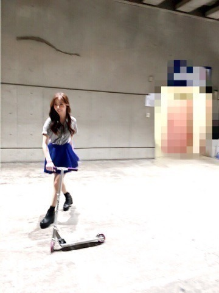
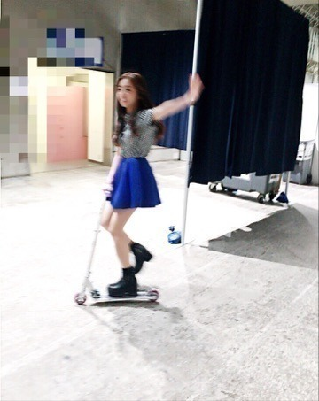

| 2016/04 18 Mon | 握手会.病院カフェ. 爬虫類カフェ まひろ♡ |
こんにちわ♡
かわむら まひろです.＊
ようやく明日から東北ですね♡.＊
テンションあがっております。。

キックボードなんか乗って，もっとテンションも上がってます...♡ぇへへ
キックボードなんていつぶりだろう。
たのしーんだから♡.＊

ぁ...ちなみに，昨日は個別握手会で，その時の私服やよ～～(^_-)♡
ちゃんとblogとかにupしないとファンの皆さんに「ろってぃー私服載せてー(´･Д･)」言われるからちゃんと載せたよ～♡ えらい～？？
この半袖のシャツ可愛いでちょ...
あとね．今回の私服はこの鮮やかなブルーのスカートがポイントかな♡
これね，スポンジみたいにやらかくて気持ちいいのです。。

それとそれとっ！
一昨日は，北野とペアで全国握手会でした！
実はと言うと，北野が私のイメージよりも大人しかったのが意外で驚きました♡
2人で途中で笑ったりしながらの握手会だったのでとっても楽しかったです(^_-)
それと握手会の時に，結構沢山の方々が「live前のろってぃーコール楽しくて一緒に叫んでるよー( ^ω^ ) 1.2.3.4.5ろってぃー♪！」って言ってくださって，とっても嬉しかったよ？
ありがとうございます（ ; ; ）
いつもばっちり届いています♡
はい，，そして話変わります。
少し前なんですが，私の姉と遊んできました。
大阪のアメリカ村知ってますか？
そのアメ村にあまり知られていない，ちょっと面白いカフェがありまして...
「病院カフェ」と言うんですが...
そこに姉と2人で行ってきました！！
ちゃんとお店の人に許可を貰ってお店の雰囲気も撮ってきたので755等にまた貼っておきます！ お店の壁には，レントゲン写真が貼られてあったり，試験管などが沢山あったりだとか... 女の子がわりと多いので，是非liveなどで大阪にいらっしゃった際は，行ってみてくださいね( ^ω^ ) ここはアニメや声優やコスプレイヤーさん等がよく来店されている様なので，何故か私だけ変に浮いてしまいました♡笑
ぁ... 私の姉は
めっちゃ面白い不思議な姉です！
姉妹とは思えないほど，似てません。
はい，あとね，その後はね，日本橋にある「爬虫類カフェ」に行ったよ♡
蛇やトカゲがいっぱいいるよ。
触れあえます。
タランチュラとも触れ合えます♡
本当にどの生物も綺麗にされてるし，本当に安心だから1度行ってみてくださいね！
熊本県含む、九州地方に住んでいる皆様、大丈夫でしょうか？ 今朝もニュースを見てきました．
私達にも何かできることはないか？という事で握手会場にて募金活動をやらせて頂きました．
1人でも多くの方が無事であります様に...
コメント(258)
2016/04/18 15:12